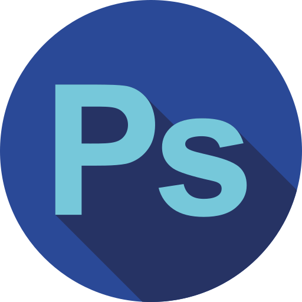
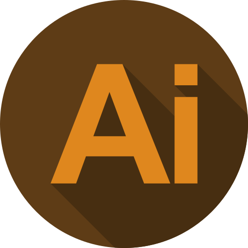
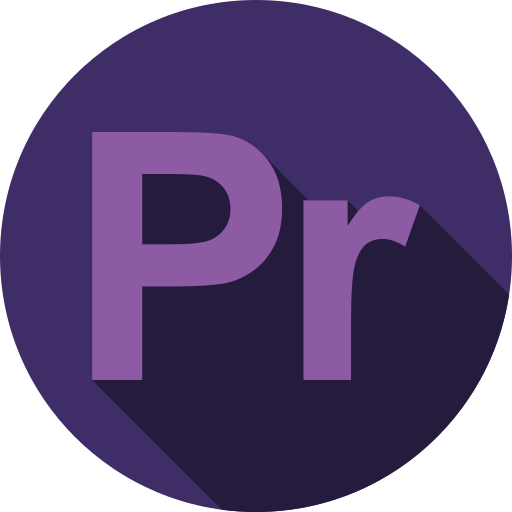
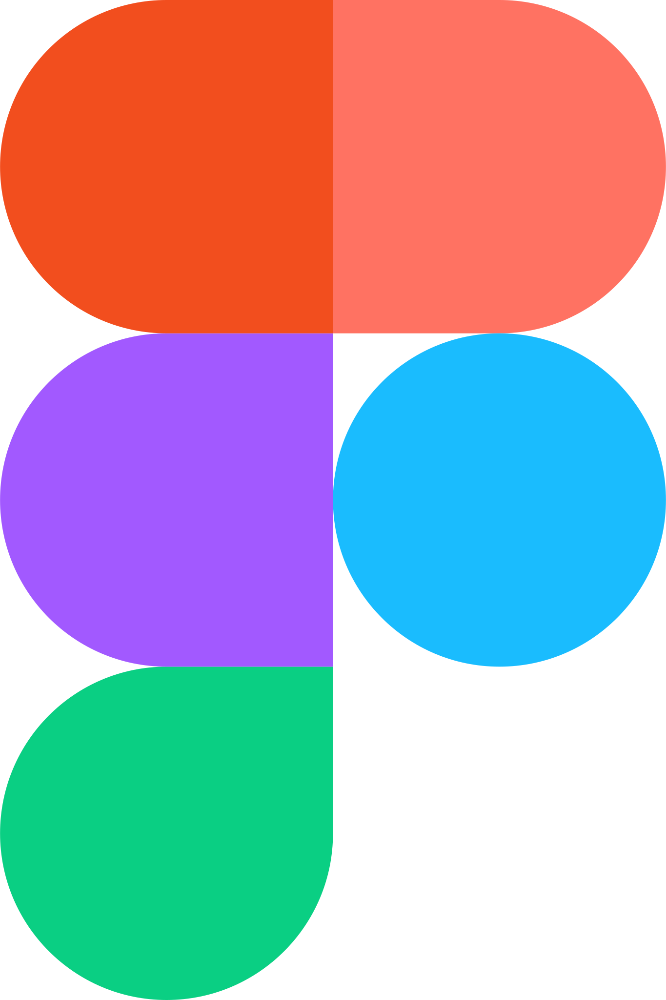
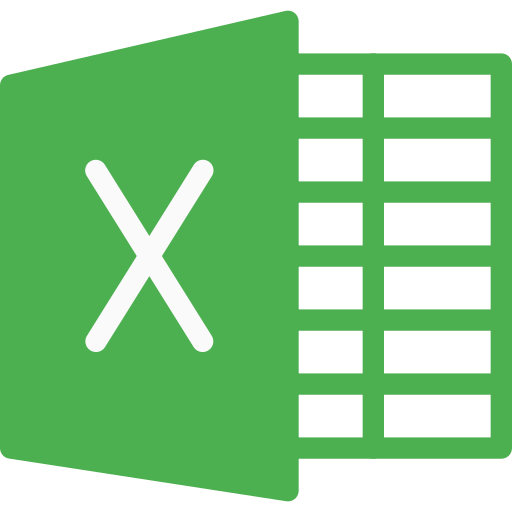
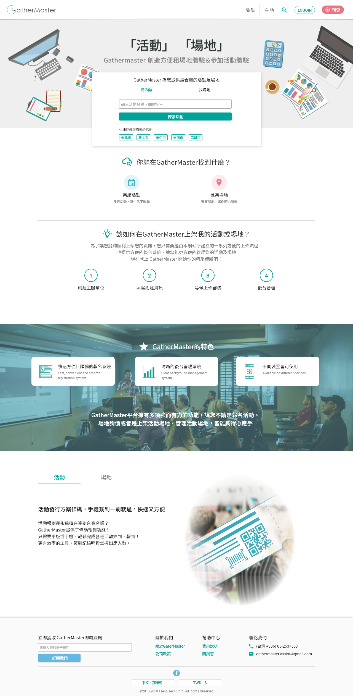
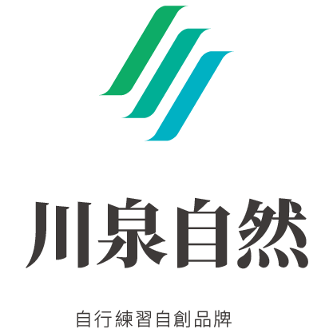
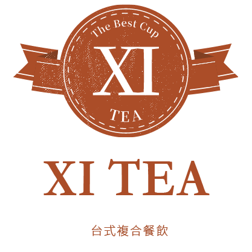
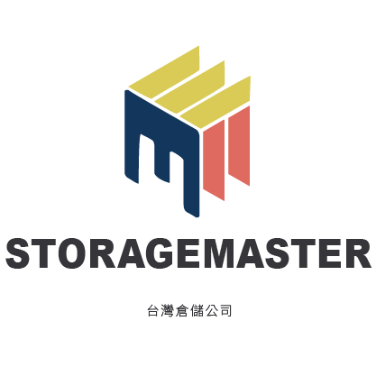

2020 — 2026
UI/UX 設計 & QA
赫斯超感有限公司
負責公司核心產品與多項專案網站之 UI / UX 設計，參與需求釐清、Wireframe 規劃、介面設計與實際上線流程。
與工程團隊密切協作，於設計階段即考量 開發可行性與維護成本，降低設計與實作落差。參與產品測試與使用流程檢視，協助優化操作動線與介面一致性，提升整體使用體驗。
在資源與人力有限的情境下，同時兼顧產品功能、視覺一致性與品牌呈現。
PORTFOLIO / 2026
UI/UX 設計・網頁設計・影像製作
我是一位具備設計、攝影剪輯與網頁實作經驗的創作者。從視覺與使用情境出發，將想法整理為清楚、易於使用的體驗。
01 / EXPERIENCE
2020 — 2026
赫斯超感有限公司
負責公司核心產品與多項專案網站之 UI / UX 設計，參與需求釐清、Wireframe 規劃、介面設計與實際上線流程。
與工程團隊密切協作，於設計階段即考量 開發可行性與維護成本，降低設計與實作落差。參與產品測試與使用流程檢視，協助優化操作動線與介面一致性，提升整體使用體驗。
在資源與人力有限的情境下，同時兼顧產品功能、視覺一致性與品牌呈現。
2019 — 2020
翔濬科技
負責公司網站整體 UI 設計、前端切版協作與網路行銷素材，同時完成品牌 Logo 與企業識別整理。
2017 — 2018
TEDxTainan（現 TEDxAnping）
負責活動攝影、修圖與成品輸出；依活動需求進行錄影和後期剪輯，將活動內容轉化為推廣影像。
2019 — 2026
成大火舞藝術社
投入火舞社群教學與活動協作，持續累積團隊帶領、現場執行與跨領域溝通經驗。
02 / EDUCATION
2014 — 2018
程式基礎、網頁設計、PHP／MySQL 資料庫與攝影實務。
2011 — 2014
設計學理、數位繪圖、創意發想與美感鑑賞能力。
03 / CAPABILITIES
HTML、CSS、JavaScript、Vue、RWD 與前端協作。
UI/UX、Logo、CI、平面設計與行銷素材製作。
攝影、剪輯、活動紀錄、團隊溝通與現場執行。





04 / INTERESTS
攝影、雜耍表演與活動籌辦，讓我練習在不同角色中觀察、協作與說故事；空閒時也持續學習 Arduino、Java、Python、Unity 等技術。
05 / SELECTED WORK

BRAND IDENTITY
品牌識別與視覺整理
包含川泉、XI TEA、SafeMate、StorageMaster、XI POP 與練習作品。以清楚的記憶點與延展性，建立各品牌的視覺語言。


